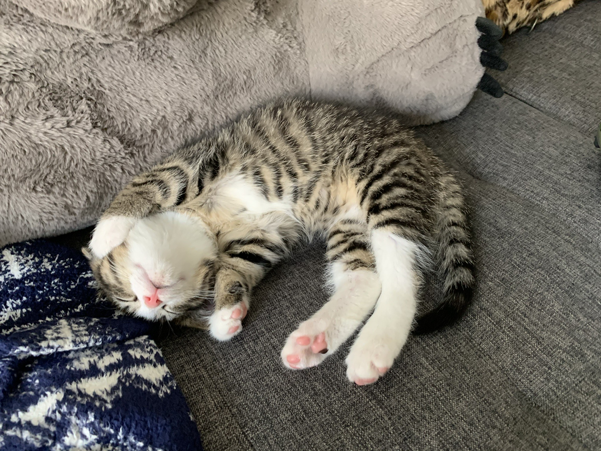

Yuan Dong is a PhD candidate at the philosophy department of Duke University. She is primarily interested in virtue epistemology, social and formal epistemology, and Chinese philosophy. She’s currently researching the philosophy of trust from a diverse set of perspectives and methodologies. On the Chinese philosophy side, she argues that the Xunzian xin (trust) is a complex virtue that involves both a moral and an epistemic dimension. She also aims to model trusting behaviors in epistemic communities using agent-based modeling (ABM). On the more applied side of things, Yuan wants to apply her accounts of trust to trusting relationships between humans and artificial agents such as AI. As VR and AI technology continues to advance, understanding the nuances of trusting relationships with virtual agents becomes increasingly important for designing ethically sensitive, responsible, helpful, and effective AIs that enhance user experience and well-being.
 To go places and do things that have never been done before – that’s what living is all about.In her spare time, Yuan is a jazz music and video game enthusiast. She also spends a lot of time with her two cats, Gui and Pi.
Recent/upcoming talks and conference participation